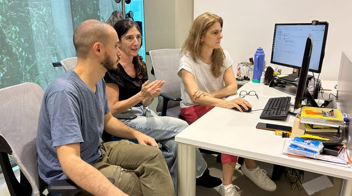
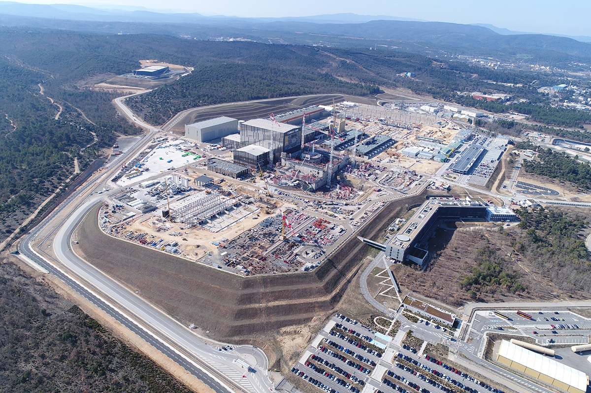

Nuevas claves para comprender la evolución del cáncer en mamíferos

Julián Maxwell, (co-primer autor), Constanza Sánchez de la Vega y Alejandra Ventura trabajan en el modelado físico-matemático.
Investigadores del CONICET lograron aportar nuevas evidencias sobre cómo evoluciona el cáncer en los mamíferos, analizando patrones biológicos y genéticos en distintas especies.
Este avance permite comprender mejor el origen y desarrollo de la enfermedad, sentando bases fundamentales para futuros tratamientos y estrategias de prevención.
El proyecto ITER se acerca a un hito histórico en energía nuclear

El reactor ITER avanza hacia su primer encendido tras años de investigación.
El proyecto internacional ITER, uno de los desarrollos científicos más ambiciosos del mundo, está cada vez más cerca de lograr su primer encendido, marcando un paso clave hacia la generación de energía mediante fusión nuclear.
Este avance podría sentar las bases para una fuente de energía limpia, segura y prácticamente ilimitada en el futuro, transformando el panorama energético global.
Adidas presentó la camiseta alternativa de la Selección Argentina para el Mundial 2026
El nuevo diseño será utilizado por la Selección Argentina en el Mundial 2026.
La marca deportiva Adidas presentó oficialmente la camiseta alternativa de la Selección Argentina de cara al Mundial 2026, con un diseño innovador que combina tradición y modernidad.
El nuevo uniforme busca reforzar la identidad del equipo campeón del mundo y generar gran expectativa entre los hinchas de cara a la próxima competencia internacional.
El conflicto global reconfigura las carteras de inversión en Argentina
Los inversores ajustan sus estrategias frente a la incertidumbre internacional.
El escenario internacional actual está generando cambios significativos en las decisiones de inversión en Argentina, obligando a los inversores a replantear sus estrategias frente a un contexto de mayor incertidumbre.
Factores como conflictos geopolíticos, inflación global y variaciones en los mercados están impulsando una mayor diversificación de carteras y una búsqueda de activos más seguros.